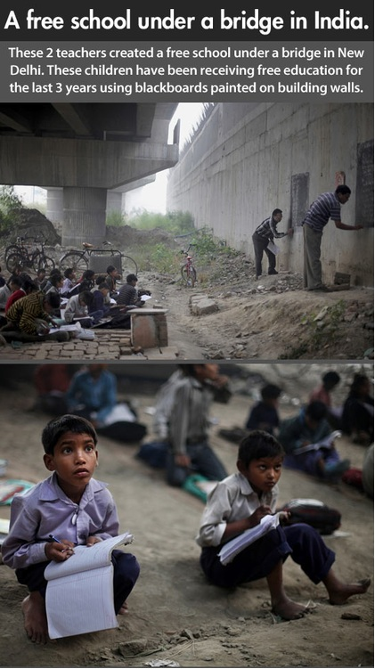
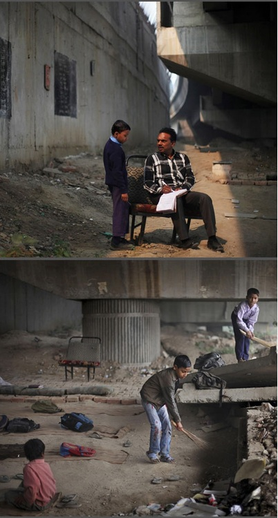
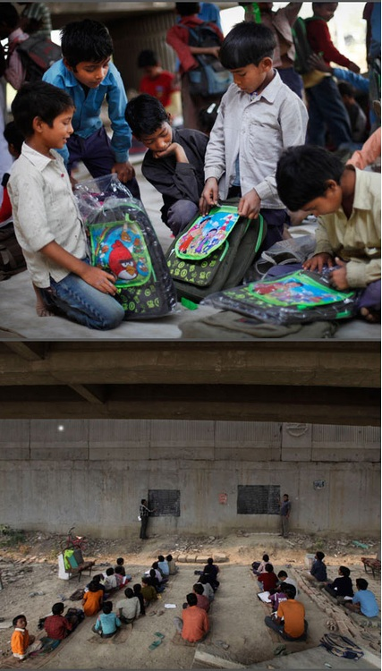
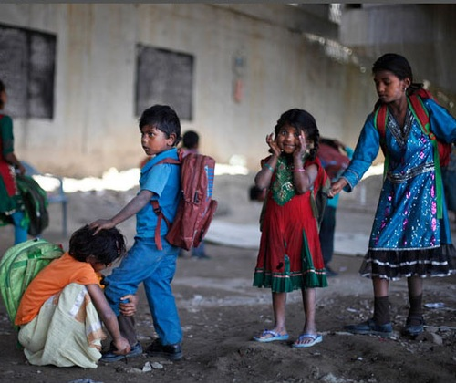

AN INSPIRING STORY :
It is an unusual school in an unusual location and is also run by an unusual teacher.
Rajesh Kumar is a shopkeeper by profession but yet spends hours every morning teaching around 80 children from the poorest of the poor in India’s capital.

.
The 43-year-old visited the construction of the Delhi transit station a few years ago and was disturbed by the sight of many children playing at the site instead of attending school.
When he questioned their parents working at the sites they all said there were no schools in the vicinity and none took care of them.

As the Delhi Metro from the Yamuna Bank station rumbles on every day, something extraordinary takes place under its tracks. Children from the neighbouring slum gather here to let their imagination take over. And helping their dreams take shape is a West Delhi shopkeeper Rajesh Kumar.
Rajesh said, "I would regularly see children idly playing in the dirt in the area. I asked their parents why weren't they sending them to school. I got no answer, so I decided to start teaching these children from then. We didn't have much, so with whatever I could get I started teaching them here."

Consequently, his open-air class room was born - between pillars and beneath the tracks of the Delhi transit system, known as the Metro.
Every few minutes a train passes above, the children unperturbed by its sounds. There are no chairs or tables and the children sit on rolls of polystyrene foam placed on the rubble.
Three rectangular patches of wall are painted black and used as a blackboard. Anonymous donors have contributed cardigans, books, shoes and stationery for the children, as their parents cannot afford them.

One unnamed individual sends a bag full of biscuits and fruit juice for the pupils every day - another incentive for the children to turn up for their studies
Source-
1.It is an unusual school in an unusual location
2.Rajesh Kumar Sharma, an extraordinary shopkeeper
3.Free school under a bridge mentored by Rajesh Kumar Sharma
4.Humble Shopkeeper Teaches Street Kids Under A Freaking Bridge. - See more at Page on scoopwhoop.com
Edit - If you would like to contribute on weekends, then you can call Mr. Rajesh Kumar at 09873445513. He runs the school under the Yamuna bank metro bridge near the Depot building.
Share on Facebook